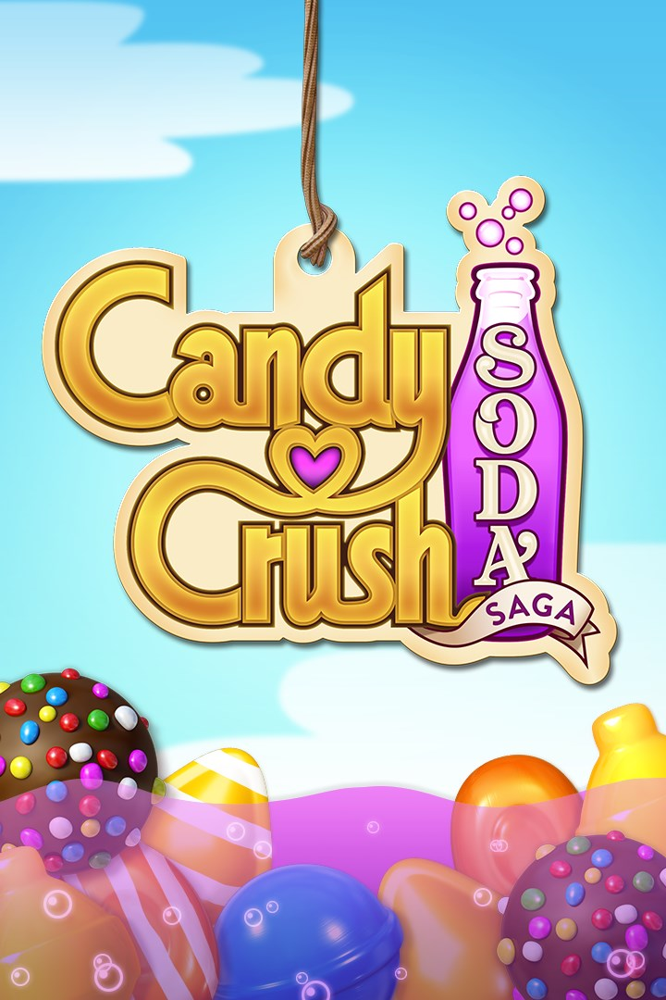

Candy Crush Soda offers thousands of levels of soda-popping fun! Spend your free time relaxing as you rescue gummy bears, pop soda bottles, and free the honey bears.
Play with your friends and family, or compete with others around the world!
Similar to the original Candy Crush, Candy Crush Soda is filled with new characters, candy combinations, and interactions. You are never bored with Candy Crush Soda because it has something new instore for you every single day.
Whether you love competing with others, or gaining prizes all on your own, this game is the perfect fit. Despite it’s childish appearance, Candy Crush Soda is great for everyone, so why not give it a try?
Bring out your inner child as you move across different Candy-themed places and help various characters such as Kimmy and Mr. Yeti!
This game is wonderful because not only is it an escape, but you don’t have to pay. There’s also new challenges everyday to keep you entertained, it’s social, and you can play with one hand.
Become a part of the Candy Crush family by creating an account online or download the game on your phone from the app store. It's the type of game you can play without overthinking if you're tired.